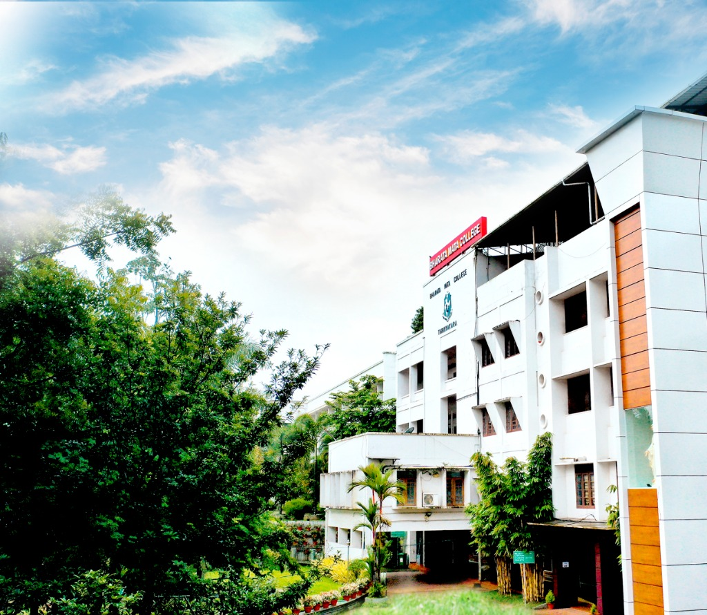
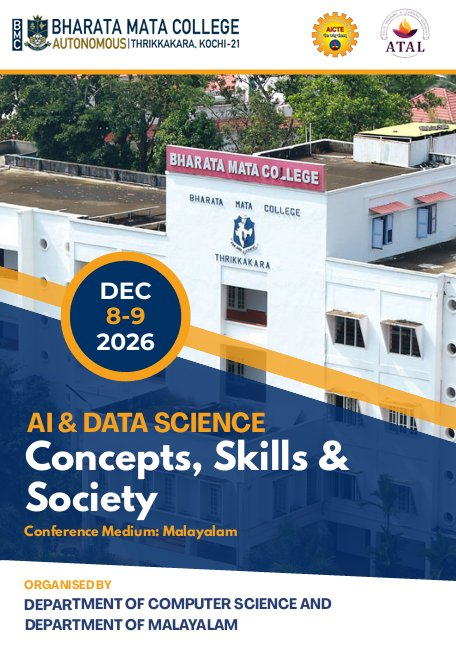
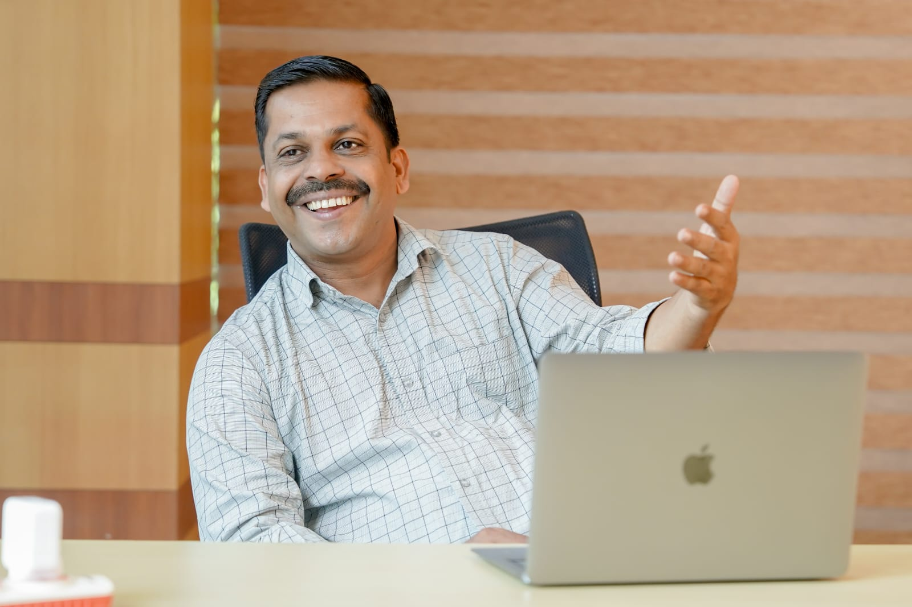
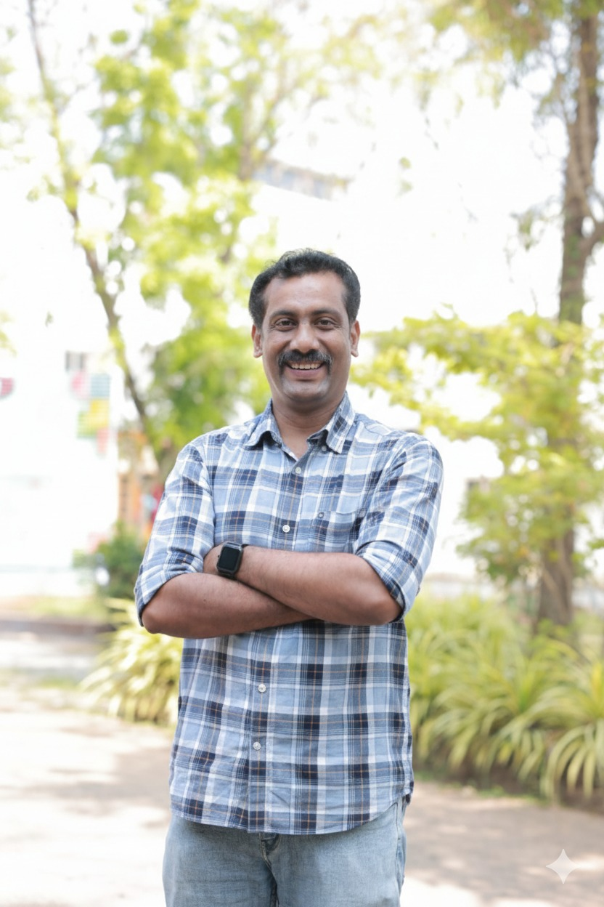
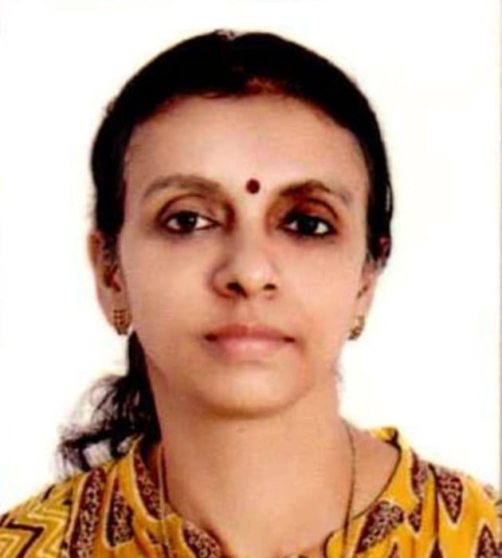
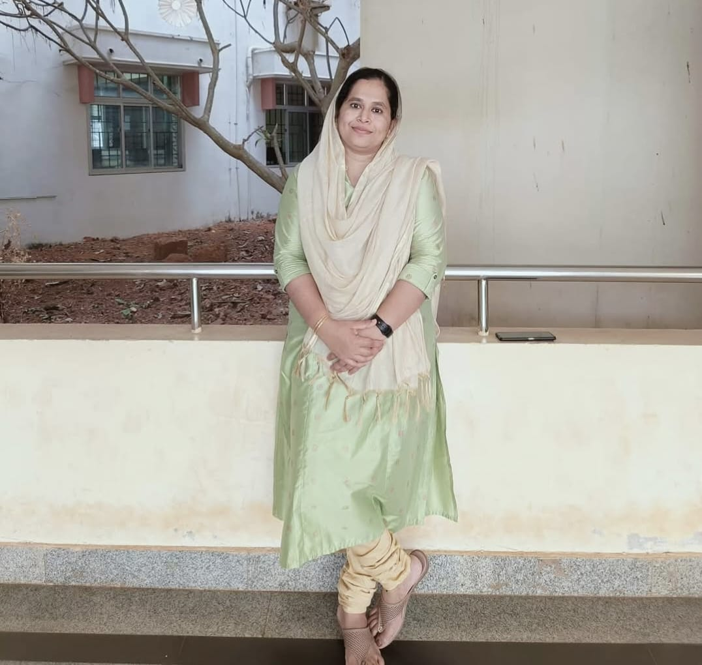

AICTE – ATAL- ധനസഹായത്തോടെ സംഘടിപ്പിക്കുന്ന ദേശീയ കോൺഫറൻസ്
ഭാരത മാതാ കോളേജ് (ഓട്ടോണമസ്), തൃക്കാക്കര, കൊച്ചി-21
AICTE-VAANI പദ്ധതിയുടെ കീഴിൽ സംഘടിപ്പിക്കുന്ന ദ്വിദിന ദേശീയ കോൺഫറൻസ്
വിദ്യാഭ്യാസം, ആരോഗ്യസംരക്ഷണം, കൃഷി, ഭരണം, വ്യവസായം തുടങ്ങി വിവിധ മേഖലകളിൽ നിർമ്മിതബുദ്ധിയും ഡാറ്റാ സയൻസും അതിവേഗം പരിവർത്തന സാധ്യതകൾ തുറക്കുകയാണ്.
AICTE-VAANI പദ്ധതിയുടെ കീഴിൽ സംഘടിപ്പിക്കുന്ന ഈ ദ്വിദിന കോൺഫറൻസ് മലയാളത്തിലുള്ള സാങ്കേതിക പരിജ്ഞാനത്തിന്റെ വളർച്ചയും എ ഐയിലും അനുബന്ധ സാങ്കേതികവിദ്യകളിലും ഉയർന്നുവരുന്ന വികസനങ്ങളെക്കുറിച്ചുള്ള അവബോധ രൂപീകരണവും ലക്ഷ്യമിടുന്നു.
അക്കാദമിക് വിദഗ്ധർ, ഗവേഷകർ, വിദ്യാർത്ഥികൾ, വ്യവസായരംഗത്തെ പ്രമുഖർ തുടങ്ങിയവർക്ക് എ ഐ, ഡാറ്റാ സയൻസ് എന്നിവയിലെ സമകാലിക മുന്നേറ്റങ്ങൾ അവതരിപ്പിക്കാനും ആശയങ്ങൾ കൈമാറാനും മികച്ച സാങ്കേതിക സെഷനുകളിലൂടെ അവയുടെ പ്രയോഗങ്ങളെയും സാമൂഹിക സ്വാധീനത്തെയും കുറിച്ച് മനസ്സിലാക്കാനും ചർച്ച ചെയ്യാനുമുള്ള ഒരു പൊതുവേദിയാണ് ഈ കോൺഫറൻസ്.
ഓട്ടോണമസ് സ്ഥാപനം · മഹാത്മാഗാന്ധി സർവകലാശാല അഫിലിയേഷൻ · NAAC A+ അക്രഡിറ്റേഷൻ

1965-ൽ 'ഭാരത മാതാ എഡ്യൂക്കേഷണൽ ട്രസ്റ്റി'നു കീഴിൽ സ്ഥാപിതമായ ഭാരത മാതാ കോളേജ് (ഓട്ടോണമസ്), തൃക്കാക്കര, മഹാത്മാഗാന്ധി സർവകലാശാലയിൽ അഫിലിയേറ്റ് ചെയ്യപ്പെട്ട എറണാകുളം-അങ്കമാലി അതിരൂപതയുടെ കീഴിൽ പ്രവർത്തിക്കുന്ന ഒരു പ്രമുഖ വിദ്യാഭ്യാസ സ്ഥാപനമാണ്.
കൊച്ചി, കാക്കനാട്- തൃക്കാക്കര സീപോർട്ട്-എയർപോർട്ട് റോഡിന് സമീപത്തായി സ്ഥിതി ചെയ്യുന്നു. 2019-ൽ നാഷണൽ അസസ്മെന്റ് ആൻഡ് അക്രഡിറ്റേഷൻ കൗൺസിലിന്റെ (NAAC) 'A+' ഗ്രേഡ് കരസ്ഥമാക്കി.
"ദൈവത്തിനും രാജ്യത്തിനും വേണ്ടി" (For God and Country) എന്ന ആപ്തവാക്യം ഉയർത്തിപ്പിടിക്കുന്ന കോളേജ്, ഉത്തരവാദിത്തമുള്ള പൗരത്വം, മതേതര കാഴ്ചപ്പാട്, ധാർമ്മിക മൂല്യങ്ങൾ എന്നിവയ്ക്ക് മുൻഗണന നൽകിക്കൊണ്ടുള്ള സമഗ്രമായ വിദ്യാഭ്യാസാനുഭവമാണ് വിദ്യാർത്ഥികൾക്ക് പകർന്നുനൽകുന്നത്. ആഗോള വെല്ലുവിളികളെ നേരിടാൻ സജ്ജരായ അക്കാദമികമായ അറിവും സമൂഹത്തിൽ സജീവമായി ഇടപെടുന്നതിന് ധാർമ്മിക അടിത്തറയുമുള്ള വിദ്യാർത്ഥികളെ വളർത്തിയെടുക്കാൻ ഈ സ്ഥാപനം ശ്രദ്ധ കേന്ദ്രീകരിക്കുന്നു.
ഔദ്യോഗിക കോളേജ് വെബ്സൈറ്റ് സന്ദർശിക്കുക2021 ജനുവരിയിൽ സർക്കാർ ധനസഹായത്തോടെ സ്ഥാപിതമായ കമ്പ്യൂട്ടർ സയൻസ് വകുപ്പ്, ആർട്ടിഫിഷ്യൽ ഇന്റലിജൻസ്, മെഷീൻ ലേണിംഗ് എന്നിവയിൽ ഇന്റഗ്രേറ്റഡ് എം.എസ്.സി. കോഴ്സ് നടത്തിവരുന്നു.
പ്രായോഗിക കഴിവുകളും സൈദ്ധാന്തിക അറിവും സമന്വയിപ്പിക്കുന്ന ഈ പാഠ്യപദ്ധതി, വിവിധ വ്യവസായ മേഖലകളിലെ ആധുനിക സാങ്കേതിക വെല്ലുവിളികളെ നേരിടാൻ സാമൂഹിക ഉത്തരവാദിത്തമുള്ള ബിരുദധാരികളെ സജ്ജമാക്കുന്നു.
1965-ൽ രണ്ടാം ഭാഷ മലയാളത്തിനായി സ്ഥാപിതമായ മലയാളവിഭാഗം, 1998-ൽ പ്രൊഫ. സോമവർമ രാജയുടെ കീഴിൽ കേരളത്തിലെ ആദ്യത്തെ ബി.എ. മലയാളം കോപ്പിറൈറ്റിംഗ് (വൊക്കേഷണൽ) കോഴ്സ് ആരംഭിച്ചു.
തൊഴിലധിഷ്ഠിത കോഴ്സ് എന്ന നിലയിൽ പരസ്യ-മാധ്യമ- ചലച്ചിത്ര മേഖലകളിൽ പ്രവർത്തിക്കുന്ന നിരവധി പ്രൊഫഷണലുകളെ വാർത്തെടുക്കാൻ ഈ കോഴ്സിന് കഴിഞ്ഞിട്ടുണ്ട്.
മലയാളത്തിലുള്ള സാങ്കേതിക പരിജ്ഞാനത്തിന്റെ വളർച്ചയും പ്രാദേശിക ഭാഷാ കമ്പ്യൂട്ടിംഗും പ്രോത്സാഹിപ്പിക്കുക.
എ ഐയിലും അനുബന്ധ സാങ്കേതികവിദ്യകളിലും ഉയർന്നുവരുന്ന വികസനങ്ങളെക്കുറിച്ചുള്ള അവബോധ രൂപീകരണം.
ഗവേഷകർക്കും വിദ്യാർത്ഥികൾക്കും തങ്ങളുടെ നൂതന ആശയങ്ങളും പ്രബന്ധങ്ങളും അവതരിപ്പിക്കാൻ മികച്ച വേദി ഒരുക്കുക.
വിദ്യാഭ്യാസ സ്ഥാപനങ്ങളും ഇൻഫോപാർക്ക് ഉൾപ്പെടെയുള്ള പ്രമുഖ ഐ.ടി. വ്യവസായ സംരംഭങ്ങളും തമ്മിലുള്ള സഹകരണം വർദ്ധിപ്പിക്കുക.
എല്ലാ മേഖലകളിൽ നിന്നുള്ളവർക്കും ആർട്ടിഫിഷ്യൽ ഇന്റലിജൻസ് വിജ്ഞാനം മലയാളത്തിലൂടെ ലളിതമായി ലഭ്യമാക്കുക.
എ ഐയുടെ ധാർമ്മികത, സുരക്ഷ, പൊതുഭരണം, ഭാഷാസംരക്ഷണം എന്നിവയിലെ പ്രയോഗങ്ങളും വെല്ലുവിളികളും ചർച്ച ചെയ്യുക.

വിവിധ അക്കാദമിക മേഖലകളിൽ നിന്നുള്ള അധ്യാപകർ, ബിരുദാനന്തര ബിരുദ വിദ്യാർത്ഥികൾ, ഗവേഷകർ, വ്യവസായ രംഗത്തെ പ്രൊഫഷണലുകൾ എന്നിവർക്ക് ഇതിൽ പങ്കെടുക്കാവുന്നതാണ്.
ആർട്ടിഫിഷ്യൽ ഇന്റലിജൻസ്, ഡാറ്റാ സയൻസ്, വളർന്നുവരുന്ന സാങ്കേതികവിദ്യകൾ എന്നീ മേഖലകളിൽ താൽപ്പര്യമുള്ളവർക്ക്, തങ്ങളുടെ ഗവേഷണപ്രബന്ധങ്ങൾ, നൂതന ആശയങ്ങൾ, വിവിധ വിഷയങ്ങളെ സമന്വയിപ്പിക്കുന്ന സംഭാവനകൾ എന്നിവ അവതരിപ്പിക്കാൻ അവസരമുണ്ട്.
താഴെ പറയുന്ന അഞ്ച് പ്രധാന വിഷയമേഖലകളിലായി പ്രബന്ധങ്ങൾ ക്ഷണിക്കുന്നു. AICTE-VAANI പദ്ധതി പ്രകാരം സാങ്കേതിക സെഷനുകളും ചർച്ചകളും മലയാളത്തിലായിരിക്കും.
തിരഞ്ഞടുക്കപ്പെടുന്ന പ്രബന്ധങ്ങൾ, ISBN 978-81-985405-9-1 നമ്പറോടുകൂടിയ കോൺഫറൻസ് പ്രൊസീഡിംഗ്സിൽ പ്രസിദ്ധീകരിക്കുന്നതാണ്.
ആർട്ടിഫിഷ്യൽ ഇന്റലിജൻസ്, ഡാറ്റാ സയൻസ് എന്നീ മേഖലകളിലെ ഗവേഷണ പ്രബന്ധങ്ങൾ, കേസ് സ്റ്റഡികൾ, വിവിധ വിഷയങ്ങളെ സമന്വയിപ്പിച്ചുകൊണ്ടുള്ള പഠനങ്ങൾ എന്നിവ സമർപ്പിക്കാം.
വ്യവസായ രംഗം, സർക്കാർ സ്ഥാപനങ്ങൾ, പ്രമുഖ സർവകലാശാലകൾ എന്നിവയിൽ നിന്നുള്ള പ്രമുഖ വിദഗ്ധർ.
സയന്റിസ്റ്റ് F / അസോസിയേറ്റ് ഡയറക്ടർ
ഹെൽത്ത് ടെക്നോളജി ഗ്രൂപ്പ്
സി-ഡാക് (C-DAC) തിരുവനന്തപുരം

ചീഫ് എക്സിക്യൂട്ടീവ് ഓഫീസർ (CEO)
ടെക്ജെൻഷ്യ
ഇൻഫോപാർക്ക്, കൊച്ചി
പ്രോഡക്റ്റ് ഡിസൈനർ
കീവാല്യൂ സോഫ്റ്റ്വെയർ സിസ്റ്റംസ്
ഇൻഫോപാർക്ക്, കൊച്ചി
ഡയറക്ടർ, ഐ.ടി. ഡയറക്ടറേറ്റ് & അസിസ്റ്റന്റ് പ്രൊഫസർ
യു.ജി.സി.-എം.എം.ടി.ടി.സി. (UGC-MMTTC)
കണ്ണൂർ സർവകലാശാല
അസിസ്റ്റന്റ് പ്രൊഫസർ & വകുപ്പ് മേധാവി
കമ്പ്യൂട്ടർ സയൻസ് വിഭാഗം
എൻ.എം.എസ്.എം. ഗവൺമെന്റ് കോളേജ്
അസിസ്റ്റന്റ് പ്രൊഫസർ
കമ്പ്യൂട്ടർ സയൻസ് വിഭാഗം
ശ്രീ അയ്യപ്പ കോളേജ്

അസിസ്റ്റന്റ് പ്രൊഫസർ
കമ്പ്യൂട്ടർ ആപ്ലിക്കേഷൻസ് വിഭാഗം
മാർ ഡയോനിസിയസ് കോളേജ്

അസിസ്റ്റന്റ് പ്രൊഫസർ & ഇൻ-ചാർജ്
കമ്പ്യൂട്ടർ സയൻസ് വിഭാഗം
നിഷ് (NISH)

അസിസ്റ്റന്റ് പ്രൊഫസർ
കമ്പ്യൂട്ടർ സയൻസ് വിഭാഗം
കാലിക്കറ്റ് സർവകലാശാല
രജിസ്ട്രേഷൻ തികച്ചും സൗജന്യമാണ് (AICTE-VAANI പദ്ധതി)
ഔദ്യോഗിക പോർട്ടൽ സന്ദർശിക്കുക: atalacademy.aicte.gov.in
പുതിയ ഉപയോക്താക്കൾ "Sign Up" തിരഞ്ഞെടുത്ത് വ്യക്തിഗത വിവരങ്ങൾ നൽകി രജിസ്ട്രേഷൻ പൂർത്തിയാക്കുക: atalacademy.aicte.gov.in/signup
ലോഗിൻ ചെയ്ത ശേഷം, FDPs മെനുവിലേക്ക് പോയി താഴെ പറയുന്നവ തിരഞ്ഞെടുക്കുക:
FDP Type: Vaani | Month: December | Mode: Offline
Ctrl + F ഉപയോഗിച്ച് താഴെ പറയുന്ന തലക്കെട്ട് തിരയുക:
‘എ ഐ & ഡാറ്റാ സയൻസ്- സങ്കല്പനം, സാങ്കേതികത, സമൂഹം’
2574946848
ഭാരത മാതാ കോളേജ്, കമ്പ്യൂട്ടർ സയൻസ് വിഭാഗ(AI & ML)വും മലയാളവിഭാഗവും സംയുക്തമായി സംഘടിപ്പിക്കുന്ന കോൺഫറൻസിനായി ‘Apply’ ക്ലിക്ക് ചെയ്യുക.
ആവശ്യമായ വിവരങ്ങൾ പൂരിപ്പിച്ച്, ആവശ്യപ്പെടുന്ന പക്ഷം ബന്ധപ്പെട്ട രേഖകൾ അപ്ലോഡ് ചെയ്യുക.
രജിസ്ട്രേഷൻ പൂർത്തിയാക്കാൻ 'Apply/Submit' എന്നതിൽ ക്ലിക്ക് ചെയ്യുക.
മാനേജർ, ഭാരത മാതാ കോളേജ്
അസിസ്റ്റന്റ് മാനേജർ, ഭാരത മാതാ കോളേജ്
പ്രിൻസിപ്പൽ ഇൻ ചാർജ്
അക്കാദമിക് ഡയറക്ടർ
വൈസ് പ്രിൻസിപ്പൽ
കോർഡിനേറ്റർ (ഡീൻ & വകുപ്പദ്ധ്യക്ഷൻ, കമ്പ്യൂട്ടർ സയൻസ് വിഭാഗം)
സഹ-കോർഡിനേറ്റർ (വകുപ്പദ്ധ്യക്ഷൻ, മലയാളവിഭാഗം)
കൺവീനർ (കമ്പ്യൂട്ടർ സയൻസ് വിഭാഗം)
കോൺഫറൻസ് അന്വേഷണങ്ങൾ, രജിസ്ട്രേഷൻ സഹായം, വേദി വിവരങ്ങൾ എന്നിവയ്ക്കായി ബന്ധപ്പെടുക.
സീപോർട്ട് - എയർപോർട്ട് റോഡ്, തൃക്കാക്കര,
കൊച്ചി, കേരളം, പിൻ: 682021